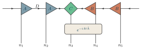
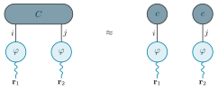
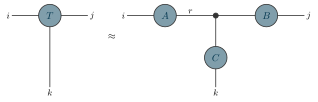
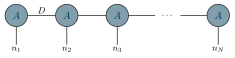
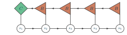
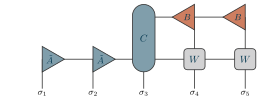
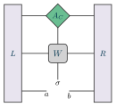
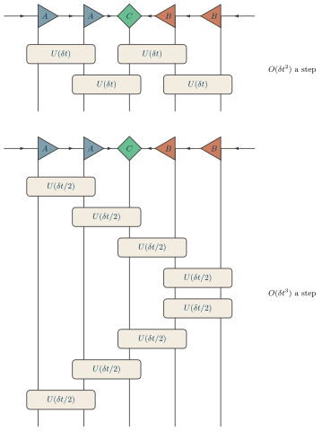
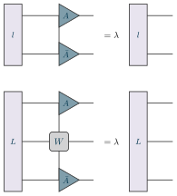

tikz-tensors
One TikZ format for tensor-network diagrams. A figure says which tensors there are and how they are contracted; the package decides every length and every coordinate, so two people who draw the same network write the same file.
A figure
A stack of layers, filled slot by slot, connected, and its open indices labelled. No number in it is a length.
\documentclass[border=4pt]{standalone} \usepackage{amsmath,amssymb} \usepackage{tikz-tensors} \input{notation} \begin{document} \begin{tikzpicture} \tnstack{S}{5}{ket, gate} \tnlayer{S}{ket}{2*canl/$A$, center/$C$, 2*canr/$B$} \tnlayer{S}{gate}{2*|, gate/$e^{-i\,\delta t\,\hat h}$/2, |} \tnconnect[along=gauge]{S} \tnopen[edge=gauge]{left}{S-ket-1} \tnopen[edge=gauge]{right}{S-ket-5} \tnopen[label=$n_{#1}$]{down}{S} \tnmid{S-ket-1}{S-ket-2}{$D$} \end{tikzpicture} \end{document}
Its picture

The file is example 08, without its comment.
The styles canl, center,
canr, gauge come from the
notation, which is the user's; the package draws
shapes only.
Install
Put tex/ on TeX's search path —
TEXINPUTS=/path/to/tikz-tensors/tex//: — and
\usepackage{tikz-tensors}. The reference
lists the whole interface; every example below shows its code.
Examples
Single tensors and decompositions




Matrix product states






Algorithms on a chain





